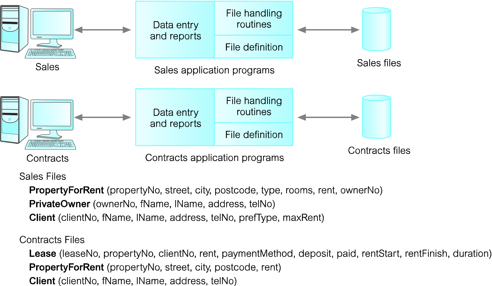
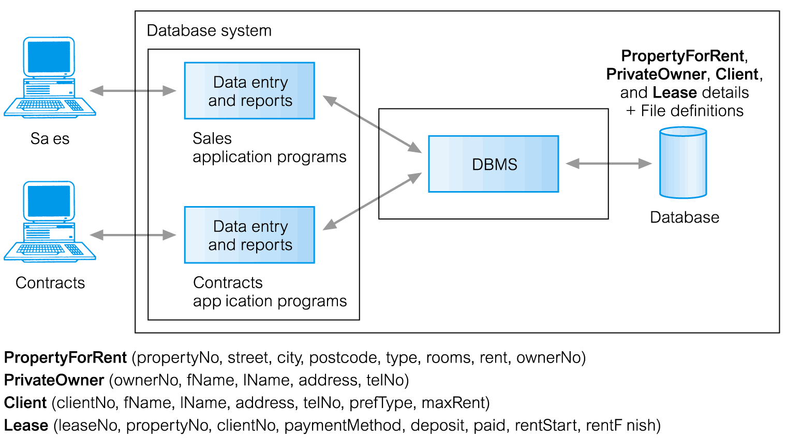
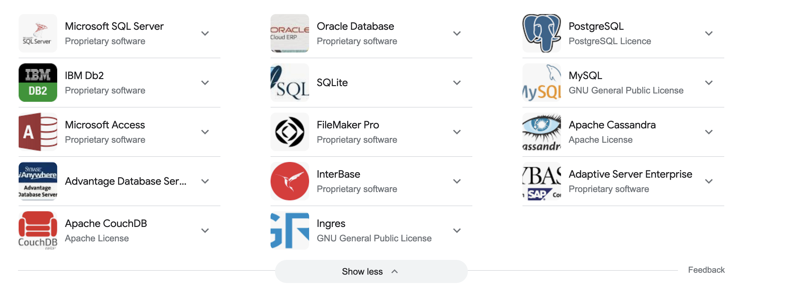
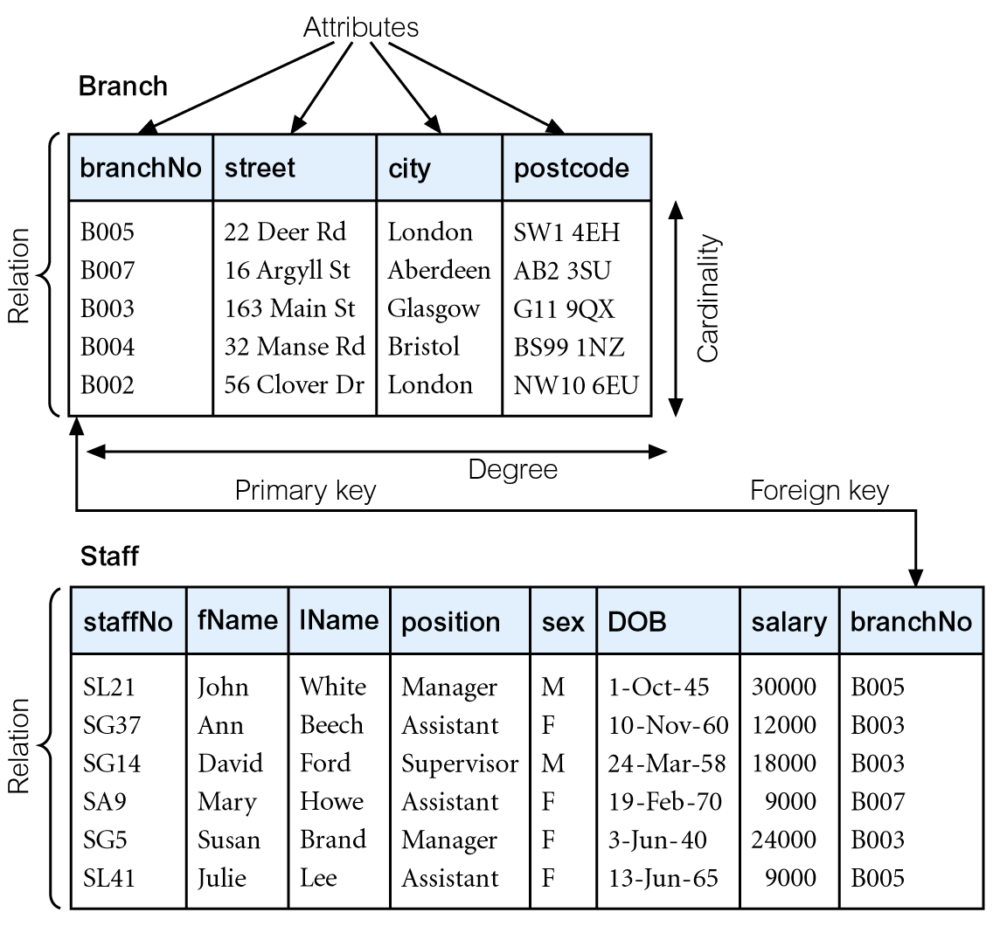
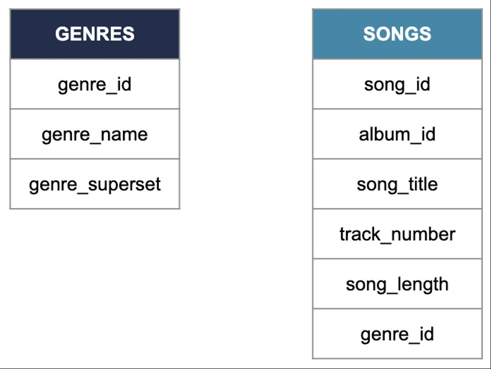
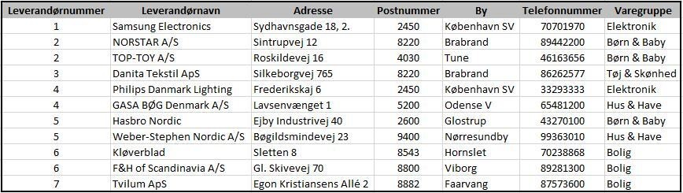
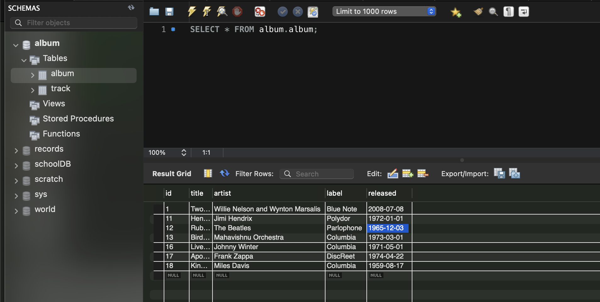

UgePlan
Ugeplan — uge 47–49
Dagens pensum er inddelt i fire kapitler. Kapitlerne bygger på hinanden: først hvorfor databaser, derefter hvordan relationsdatabaser er opbygget, så øvelse, og til sidt MySQL Workbench i praksis.
Databaser og DBMS
Læringsmål · databaseapplikationer · filbaseret tilgang · DBMS · populære DBMS — s. 4–8
Kapitel 01
Læringsmål
mål for dette forløb
- Anvendelser af databasesystemer
- Kendetegn ved filbaserede systemer
- Problemer med den filbaserede tilgang
- Betydningen af begrebet relationsdatabase
- Betydningen af begrebet Database Management System (DBMS)
Kapitel 01
Eksempler på databaseapplikationer
Databaser arbejder usynligt bag grunden af hverdagen. Fem situationer, du allerede kender:
Supermarkedet
Indkøb i supermarkedet
Kreditkort
Indkøb med kreditkort
Rejsebureau
Bestilling af ferie
Bibliotek
Brug af det lokale bibliotek
Forsikring
Tegning af forsikring
Fællesnævneren: data, der skal kunne findes, opdateres og søges i.
Kapitel 01
Filbaseret database

Hvad er problemet?
Hver applikation har sin egen kopi af file handling routines og file definition. Det betyder:
- Data duplikering — samme data gemmes mange steder
- Inkonsistens — opdateres én kopi, blir de andre forældede
- Data isolation — data sidder fast i separate filer
- Integritetsproblemer — ingen fælles regler for gyldigdata
Konklusion: flere applikationer på samme data kræver ét fælles system — en database.
Kapitel 01
Database Management System (DBMS)

Central lagring
Data ligger ét sted og deles mellem flere applikationer — uden dobbelt opbevaring.
Samtidig adgang
Flere brugere kan læse og opdatere samtidig; DBMS’et styrer konflikter.
Forespørgsler & sikkerhed
Søgning, rettigheder og backup håndteres centralt i stedet for i hver app.
Kapitel 01
Populære DBMS

Hvem bruger hvad?
Oracle og Microsoft SQL Server dominerer de store enterprise-løsninger. MySQL og PostgreSQL er verdens mest udbredte open source-systemer.
Which are open source?
Bemærk: Oracle tjener fortsat mest på cloud-tjenester (OCI) og licensaftaler — open source-konkurrenter som MySQL/PostgreSQL presser priserne.
Relationsdatabaser og SQL
Historien · SQL & CRUD · mini-quiz · terminologi · relationer — s. 10–15
Kapitel 02
Historien om relationsdatamodellen
Introduktion af datamodellen
E.F. Codd introducerede relationsdatamodellen i 1970 hos IBM og revolutionerede måden, data organiseres på.
Grundlag for moderne databaser
Codds model lagde fundamentet for moderne databaser og effektiv datahåndtering.
Stadig industristandard 50+ år senere
Forespørgselssproget
Codd beskrev teoretiske forespørgselssprog, der senere førte til udviklingen af SQL.
Teori → SQL
Kapitel 02
SQL betydning
SQL står for Structured Query Language — det mest anvendte sprog til at arbejde med relationelle databaser. Oprindeligt hed sproget SEQUEL, men navnet blev ændret af juridiske årsager.
CRUD = de fire grundoperationer, som enhver databaseapplikation bygger på.
Kapitel 02 · Mini-Quiz
Mini-Quiz
Diskutér i parvist — svaret gemmer sig to sektioner oppe på siden.
Kapitel 02
Terminologi i den relationelle model

- Relation = en tabel (fx Branch, Staff)
- Attribut = en kolonne (fx branchNo, street, city)
- Tupel = en række / én post
- Grad = antal attributter → Branch: 4, Staff: 8
- Kardinalitet = antal rækker → Branch: 5, Staff: 6
- Primærnøgle = kolonne der unikt identificerer en række
Kapitel 02
Relationsdatabase
„En relationsdatabase er en samling af struktureret data organiseret i tabeller, hvor hver tabel repræsenterer en specifik entitet eller relation.“
Kapitel 02
Relationsdatabaser — et eksempel
To tabeller, én relation
Tabel GENRES og tabel SONGS er to separate entiteter. De bliver forbundet gennem kolonnen genre_id:
- I GENRES er genre_id primærnøgle
- I SONGS er genre_id en fremmednøgle
- Fremmednøglen peger på primærnøglen i den anden tabel
Regel: én sang har ét genre — ét genre kan have mange sange.
Øvelser
Quiz · øvelse 1–3: tabeller, nøgler og relationer — s. 17–20
Kapitel 03 · Quiz
Hvilken kolonne skaber relationen?

Tip: Se efter en kolonne, der findes i begge tabeller.
Kapitel 03 · Øvelse 1
Øvelse 1 — To tabeller i Excel
En virksomhed sælger varer og modtager ordrer. Byg opgaven i Excel.
- Konstruér to tabeller i Excel over en virksomheds varer og ordrer.
- Hvilke søjleoverskrifter (dvs. hvilken information) skal indgå i tabellerne?
- Hvordan kan man på en hensigtsmæssig måde søge i tabellerne?
- Hvordan kan du oprette relation mellem de to tabeller?
Kapitel 03 · Øvelse 2
Øvelse 2 — Primærnøgle og fejl

To spørgsmål til tabellen
- Hvilket feltnavn ville du sætte primærnøglen ved i tabellen?
- Er der errors i tabellen?
Flere leverandører deler samme nummer — en primærnøgle skal være unik.
Kapitel 03 · Øvelse 3
Øvelse 3 — Design tre tabeller
Formål: Design tabellerne Kursus, Studerende og Lærer med data (10 records pr. tabel).
1 · Felter
Definér felter for hver tabel — hvilken information skal gemmes om et kursus, en studerende og en lærer?
2 · Nøgler
Angiv primærnøgle for hver tabel, og marker relationerne mellem tabellerne (fx fremmednøgler).
3 · Levering
Et Excel-ark med tre tabeller og alle felter. Nøgler tydeligt markeret — uden rigtige person- eller kursusdata.
MySQL og Workbench
Overblik · demo · SQL-udvikling · CRUD · ekstra funktioner — s. 22–30
Kapitel 04
Stack Overflow Developer Survey 2025 — Most Popular Databases
Kilde: survey.stackoverflow.co/2025 — ca. 49.000 respondenter fra 177 lande.
Hvad fortæller tallene?
PostgreSQL voksede fra 48,7 % til 55,6 % og er nu professionelles foretrukne valg. MySQL holder stabilt på 40,5 %.
Hvorfor vi lærer MySQL
Blandt begyndere er MySQL fortsat nummer ét (47,7 %) — det er den mest udbredte relationsdatabase i webhosting, og Workbench gør starten lettere.
Kapitel 04
Introduktion til MySQL Workbench
MySQL Workbench er et grafisk værktøj udviklet af Oracle. Det anses for at være lettere at bruge end pgAdmin.
SQL-udvikling
Skriv, kør og fejlfind SQL direkte i editoren.
Datamodellering
Tegn tabeller og relationer visuelt (EER-diagrammer).
Serveradministration
Hold styr på brugere, rettigheder og serverstatus.
Kapitel 04
Demo — MySQL Workbench
Før vi åbner Workbench: start MySQL-serveren og log ind som root.
# Start MySQL-serveren (macOS) sudo /usr/local/mysql/support-files/mysql.server start # Log ind i kommandolinjen /usr/local/mysql/bin/mysql -u root -p
Derefter bytter vi til Workbench og arbejder videre med GUI’en.
Kapitel 04
SQL-udvikling i Workbench
Fokus på SQL-udviklingen
Vi koncentrerer os om SQL-udviklingsdelen af værktøjet i dette forløb.
CRUD uden SQL
Workbench giver mulighed for at oprette, læse, opdatere og slette data — også uden at skrive SQL.
Brugervenligt for begyndere
Det er brugervenligt for dem, der er mindre fortrolige med SQL — du ser data med det samme.
Kapitel 04
CRUD i MySQL Workbench

Kapitel 04
Oprettelse og læsning af data
To måder at arbejde på
- Oprettelse: indsæt en ny række direkte i tabellens result grid i Workbench.
- Læsning: åbn tabellen, eller forespørg med SQL.
Eksemplet viser, hvordan man læser data fra en tabel:
SELECT * FROM album;
Kapitel 04
Opdatering og sletning af data
Viser, hvordan man opdaterer og sletter én række via GUI — og den tilsvarende SQL.
UPDATE album
SET title = 'Nyt navn'
WHERE album_id = 1;
DELETE FROM album
WHERE album_id = 1;
Advarsel: glem aldrig WHERE — uden den rammer UPDATE og DELETE alle rækker i tabellen.
Kapitel 04
Ekstra funktioner og opsummering
GUI-funktioner
Arbejd med data gennem brugergrænsefladen — klik, rediger, gem.
Filter
Filtrér resultater direkte i result grid for at finde netop de rækker, du skal bruge.
Data import
Importer data fra fx CSV eller Excel direkte i Workbench.
Kapitel 04
Installér MySQL Workbench + sample DB
- Installér MySQL Workbench fra mysql.com — vælg versionen til dit operativsystem.
- Tilslut en sample database (fx sakila eller world), så der er data at øve på.
- Åbn din connection og bekræft, at du kan se skemaerne i navigatoren.
Afslutning
Opsummering
Grundlæggende databasebegreber
Forskellen på filbaserede systemer og databasesystemer · eksempler på databaseapplikationer i hverdagen · DBMS og populære systemer som MySQL og Oracle.
Relationsdatabaser
E.F. Codd og den relationelle datamodel · relationer, attributter, tupler, grad og kardinalitet · primær- og fremmednøgler — hvordan tabeller relateres.
SQL og CRUD
SQL som forespørgselssprog: Structured Query Language · CRUD: Create, Read, Update, Delete · historien bag navneændringen fra SEQUEL til SQL.
Diskussion